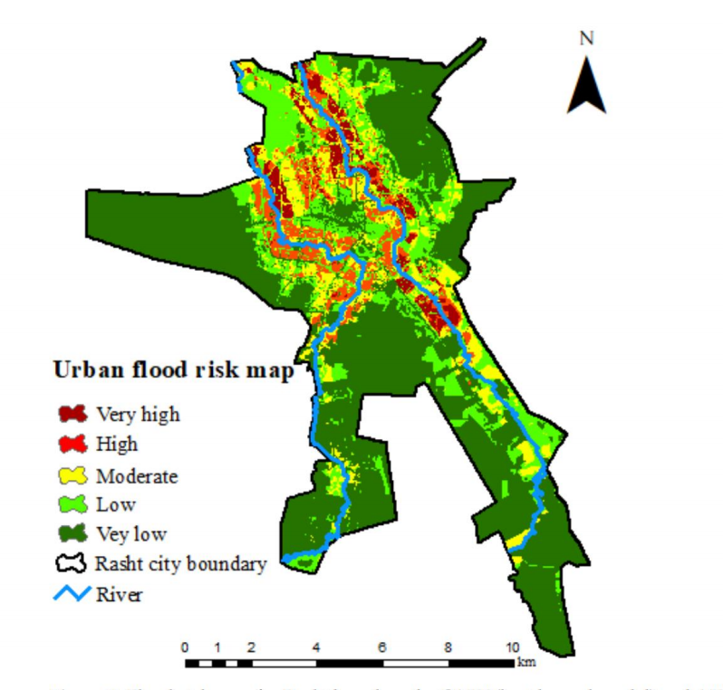

6 ClassificationⅠ
6.1 Summary
| Theme | Key Points | Source |
|---|---|---|
| Urban Expansion | Significant urban growth in Perth Metropolitan Region from 1990 to 2015, visualized using Landsat data | MacLachlan et al. 2017 |
| Air Pollution and LULC | Impact of LULC changes on major air pollutants and land surface temperatures, analyzed using Sentinel-3 and Sentinel-5 data | Fuldalu and Alta, 2021 |
| Urban Green Spaces | Classification and assessment of urban green spaces using a variety of remote sensing techniques, highlighting the importance of hybrid methods and object-based image analysis | Shahtahmassebi et al. 2021 |
| Monitoring Forests and Illegal Logging | Monitoring forest loss and illegal logging in Brazil’s Amapá with Landsat data and the Forest Watcher app | Leonardo Brito, DEMA-AP |
| Expert Systems | Application of expert systems in environmental analysis, combining human knowledge with algorithmic data processing | Aftab Alam |
| Classification and Regression Trees (CART) | Application of CART in categorizing continuous and discrete data, including model construction and analysis | StatQuest |
| Overfitting and Model Tuning | Discussion on strategies to avoid overfitting, such as pruning and Random Forests, and ensuring model reliability and accuracy | Bellini and Cascella, 2022; |
| Image Classification Techniques | Principles and applications of image classification techniques like Maximum Likelihood Classification and Support Vector Machines | Núñez et al. 2018; Drew Wilimitis |
6.1.1 Machine Learning Review
6.1.2 Machine Learning Methods
Understanding CART: The Foundation
Decision Tree - Classification Source: Towards Data Science
Decision Tree - Regression Source: Towards Data Science
CART forms the bedrock of decision-making in machine learning, bifurcating into classification trees for categorical outcomes and regression trees for continuous predictions. This duality allows CART to adapt seamlessly to varying data analysis needs, from predicting whether it’s a good day for golf based on weather conditions to forecasting GCSE scores.
- Key Feature: Utilizes Gini Impurity to quantify category mixture within leaves, ensuring the purest split at each decision node.

Gini Impurity formula Source: Huy Bui
Random Forests: The Ensemble Strength
Building on CART, Random Forests amalgamate numerous decision trees to form a forest, enhancing prediction accuracy and stability through the wisdom of the crowd.
Source:Rosaria Silipo
Mechanism: Employs bootstrap sampling and random variable selection at each split, culminating in a majority vote decision for classification or mean prediction for regression.
Application: Ideal for land cover classification, showcasing its ability to handle large, complex datasets with reduced overfitting risk.
Support Vector Machines: Precision in Classification
SVM excels in creating hyperplanes in high-dimensional spaces, distinguishing between categories with maximum margin, thus ensuring clear, defined classification boundaries.
Source: (Núñez et al. 2019)
Innovation: The kernel trick transforms linearly inseparable data, facilitating classification in more complex scenarios.
Challenge: Hyperparameter tuning (C and Gamma) through grid search optimizes the model’s accuracy and generalization capability.
6.2 Applications
6.2.1 Urbanization’s Impact on Land Surface Temperature
The study by Weng and Lu (2008) offers an insightful investigation into the effects of urbanization on land surface temperature (LST) in Indianapolis, USA. Utilizing Landsat TM/ETM+ imagery and a spectral unmixing model, the research quantitatively captures the morphological changes in urban landscapes and their impact on LST, revealing critical insights into the dynamics between increasing impervious surfaces, decreasing vegetation coverage, and the development of urban heat islands (UHIs).
Methodology and Findings
Employing linear spectral unmixing and hybrid classification methods, the study meticulously maps changes in land use/land cover (LULC), impervious surfaces, and vegetation coverage over time. It demonstrates a marked increase in impervious surfaces alongside a decrease in vegetation, correlating these changes with a rise in LST. Importantly, the study identifies a significant inverse relationship between LST and vegetation coverage, emphasizing the cooling effect of green spaces in urban areas.
Significance for Urban Planning
This research highlights the importance of integrating environmental considerations into urban planning efforts. By linking urbanization-driven LULC changes with increased LST, the study equips urban planners and policymakers with critical insights for creating more sustainable and livable urban environments. It underscores the necessity of preserving and incorporating green spaces within urban designs to mitigate UHI effects and enhance urban resilience to climate change.
6.2.2 Urban Flood-Risk Assessment: Decision-Making and Machine Learning Integration
A groundbreaking approach to urban flood-risk assessment has been demonstrated by Taromideh et al. (2022), focusing on the city of Rasht, Iran. This study represents a significant advancement in utilizing semi-subjective and objective data through the Analytic Hierarchy Process (AHP) and machine learning models. By integrating classification and regression tree models with decision-making frameworks, the research outlines a method for generating urban flood-risk maps that consider both vulnerability and hazard of different urban areas.
Technical Insights:
Machine Learning Application: The study utilizes classification and regression tree models to analyze flood hazards and vulnerabilities. This methodological choice highlights the efficacy of machine learning in parsing complex environmental data, thereby enabling precise zoning of urban flood risks.
Data Integration: Employing the AHP methodology, the study adeptly combines subjective judgments with objective assessments to organize and evaluate flood risk. This innovative approach underscores the importance of incorporating local knowledge and expert opinions into the analytical process, providing a more nuanced understanding of flood risks.
- Practical Outcomes: The resultant urban flood-risk map offers critical insights for city planners and emergency response teams in Rasht, illustrating areas of varying flood risk. Such detailed mapping is instrumental in guiding mitigation strategies, emergency responses, and urban planning decisions aimed at minimizing flood impact.

Implications for Urban Planning:
The study by Taromideh et al. (2022) not only provides a practical tool for flood-risk assessment in Rasht but also sets a precedent for other urban areas grappling with similar challenges. The integration of decision-making processes and machine learning into urban planning and risk management offers a promising pathway toward enhancing urban resilience against flooding.
6.3 Reflection
Reflecting on my experiences from CASA0006, where I first delved into machine learning, I see how invaluable that foundational knowledge has been for my current foray into remote sensing applications. The leap from understanding basic machine learning concepts to applying them in the analysis of environmental data and satellite imagery has been both enlightening and empowering.
The ability to utilize techniques such as Classification and Regression Trees (CART) and random forests in the context of remote sensing has opened up new avenues for me to explore the complexities of our environment. It’s fascinating to see the direct impact of these machine learning tools in interpreting vast datasets, monitoring urban growth, and assessing the health of our ecosystems from a bird’s-eye view.
This journey has reinforced the idea that the skills and knowledge acquired in machine learning are not just theoretical but highly applicable in solving real-world environmental challenges. It’s a vivid reminder of the importance of interdisciplinary learning and the need to stay curious and adaptable in a rapidly evolving field.
6.4 References
Bellini, V. et al. (2022) ‘Understanding basic principles of artificial intelligence: a practical guide for intensivists’, Acta Biomed, 93, p. 2022297.
Fuladlu, K. & Altan, H. (2021) ‘Examining land surface temperature and relations with the major air pollutants: A remote sensing research in case of Tehran’, Urban Climate, 39, p. 100958.
Gonzales, J. (2019) ‘How a sheriff in Brazil is using satellites to stop deforestation’, [Online]. Available at: https://news.mongabay.com/2019/04/how-a-sheriff-in-brazil-is-using-satellites-to-stop-deforestation/
MacLachlan, A. et al. (2017) ‘Urban Growth Dynamics in Perth, Western Australia: Using Applied Remote Sensing for Sustainable Future Planning’, Land, 6(1), p. 9.
Núñez, J.M. et al. (2019) ‘High-Resolution Satellite Imagery Classification for Urban Form Detection’, [Online]. IntechOpen. Available at: https://www.intechopen.com/chapters/64971 (Accessed: 16 March 2024).
Shahtahmassebi, A.R. et al. (2021). Remote sensing of urban green spaces: A review, Urban Forestry & Urban Greening, årg. 57, s. 126946.
Taromideh, F.; Fazloula, R.; Choubin, B.; Emadi, A.; Berndtsson, R. (2022). Urban Flood-Risk Assessment: Integration of Decision-Making and Machine Learning. Sustainability, 14(4483). https://doi.org/10.3390/su14084483
Weng, Q. & Lu, D. (2008). A sub-pixel analysis of urbanization effect on land surface temperature and its interplay with impervious surface and vegetation coverage in Indianapolis, United States, International Journal of Applied Earth Observation and Geoinformation, årg. 10, nr. 1, s. 68–83.